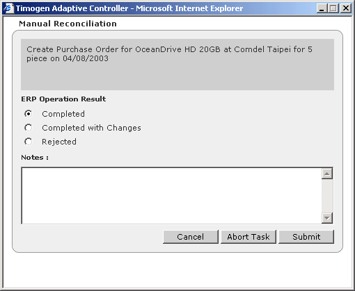

Reconciling Tasks
Manual tasks, tasks that are performed outside the Timogen Adaptive Controller system, must be reconciled once they are completed.
To reconcile a
task
1 In the Functions drop-down list, select Business User.
2 Click the Execution tab, then click Tasks. The Tasks page appears.

Manual tasks that have been executed and are awaiting reconciliation have a Reconcile link in the Actions column.
3 Click the Reconcile link for the task you have executed. The Manual Reconciliation
dialog box appears.

4 Select an ERP Operation Result and optionally enter a note.
5 Click Submit.
6 In the confirmation dialog box, click OK.